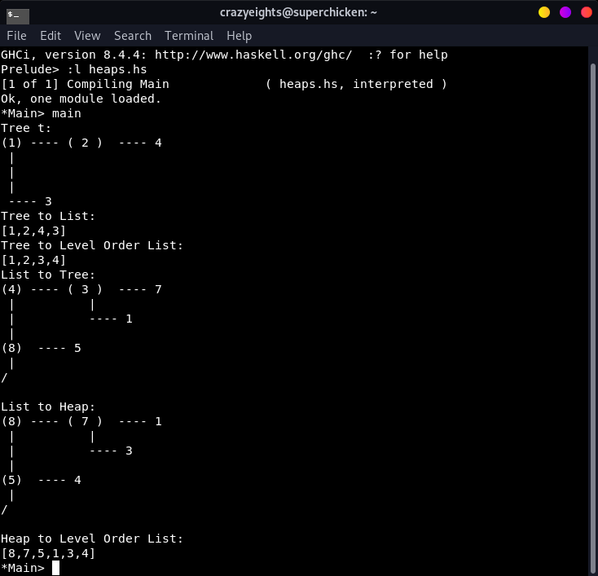

Haskell is a functional programming language. Functions and programs are like mathematical equations. It is really fun to play with.
sudo apt-get install haskell-platform//In terminal:
~$ ghci
//To quit:
:quit
//To get type of variable:
:t [variable]
//To load from file:
:l [filename]-- I am a single line comment
{--I am a multiline comment --}
-- Ints
a=5
-- Floats
a=5.23
-- Chars
a='a'
-- Strings:
a="abcd"
-- or
a=['a', 'b', 'c', 'd']
-- Lists, must all have the same data type
-- Ex: An integer list, type: [Int]
a=[1,2,3,4]
-- Tuples, can have different types
-- Ex:
a=(1,2,'a', [1,2,3])
-- A list of ints
a=[1,2,3,4]
-- Get the first element:
head a
1
-- Get every element but the first:
tail a
[2,3,4]
-- Get the last element:
last a
4
-- Get every element but the last:
init a
[1,2,3]
-- Returns true if list is empty, false otherwise
null a
False
-- reverse the order of the list
reverse a
[4,3,2,1]
-- get length of list
length a
4
-- get first n elements of the list
take 2 a
[1,2]
-- drop first n elements of the list
drop 2 a
[3,4]
-- get largest element in a list
maximum a
4
-- get smallest element in a list
minimum a
1
-- get the sum of the elements in the list
sum a
10
-- get the product of the elements in the list
product a
24
-- check if element is a list
elem 5 a
False
-- concat 2 lists:
a ++ [5,6]
[1,2,3,4,5,6]
-- Add an element to a list:
4 : a
[5,1,2,3,4]
-- OR:
[5] ++ a
[5,1,2,3,4]-- Example: double every element in a list
a = [1,2,3,4]
[x*2 |x <- a]
[2,4,6,8]
-- double only even numbers:
[x*2 | x <- a, (even x)]
[4,8]
-- double even numbers, triple odd numbers:
[if even x then x*2 else x*3 | x <- a]
[3,4,9,8]
-- Ex:
[1..10]
--OUT:
[1,2,3,4,5,6,7,8,9,10]
['a'..'g']
--OUT:
"abcdefg"
[10..1]
--OUT:
[]-- Ex: Sum of 2 ints
mySum:: Int -> Int -> Int
mySum x y = x+y
--To call the function:
(mySum 2 4)
-- OUT:
6-- Ex: Recursive function calculating factorial
myFact:: Int -> Int
myFact 0 = 1
myFact n = n * (fact (n-1))
--To call the function:
myFact 4
-- OUT:
24-- Ex: Recursive function calculating factorial
myFact :: Int -> Int
myFact n | n == 0 = 1
| otherwise = (fact (n-1))
--To call the function:
myFact 4
-- OUT:
24-- Ex: Recursive function calculating nth term of the fibonacci sequence
myFib:: Int -> Int
myFib 0 = 0
myFib 1 = 1
myFib n = m where m = (myFib (n-1)) + (myFib (n-2))
--To call the function:
myFib 5
-- OUT:
5-- Ex: Increase by one
((\x-> x + 1) 4)
--OUT:
5-- Ex:
foldl (+) 0 [1,2,3]
6
foldl (-) 12 [1,2,3]
6
foldr (-) 12 [1,2,3]
-10map (+2) [1,2,3]
[3,4,5]
map (*2) [1,2,3]
[2,4,6]filter (even) [1,2,3]
[2]
filter (<10) [8, 9, 10]
[8,9]
filter (=='a') ['a','a', 'b', 'c']
"aa"
-- Ex:
data Food = Cake | Spinach | Apple
myFoods :: Food -> [Char]
myFoods Cake = "Yum!"
myFoods Spinach = "Yuck"
myFoods Apple = "Nice Healthy Choice"
-- Run
myFoods Apple
--OUT:
"Nice Healthy choice"
-- A) Define enumerated data type
data LogicDataType = Trwue
| Fawlse
| Unkwown
deriving Show
-- Logical NOT
ternaryNOT :: LogicDataType -> LogicDataType
ternaryNOT Trwue = Fawlse
ternaryNOT Fawlse = Trwue
ternaryNOT a = a
-- Logical AND
ternaryAND :: LogicDataType -> LogicDataType -> LogicDataType
ternaryAND Trwue Trwue = Trwue
ternaryAND Fawlse a = Fawlse
ternaryAND a Fawlse = Fawlse
ternaryAND a b = Unkwown
-- Logical OR
ternaryOR :: LogicDataType -> LogicDataType -> LogicDataType
ternaryOR Fawlse Fawlse = Fawlse
ternaryOR Trwue a = Trwue
ternaryOR b Trwue = Trwue
ternaryOR a b= Unkwown
-- Run
ternaryOR Trwue Fawlse
-- OUT:
Trwue
-- Ex: Using Maybe for division
import Data.Maybe
safeDivide :: Int -> Int -> Maybe Int
safeDivide n 0 = Nothing
safeDivide n m = Just (n `div` m)
-- Run
safeDivide 12 3
--Out:
Just 4
safeDivide 12 0
--Out:
Nothingdata LList = Null | Node Int LList
instance Show LList where
show Null = "| . |"
show (Node a llist) = "| "++(show a)++" |---->"++show(llist)
addToList :: LList -> Int -> LList
addToList Null a = (Node a (Null))
addToList (Node a llist) b = (Node a (addToList llist b))
sumOfList :: LList -> Int
sumOfList Null = 0
sumOfList (Node a llist) = a+(sumOfList llist)
arrayToLList :: [Int] -> LList
arrayToLList [] = Null
arrayToLList (x:xs) = (Node x (arrayToLList xs))
removeAtK :: LList -> Int -> LList
removeAtK Null a = Null
removeAtK (Node a llist) 0=llist
removeAtK (Node a llist) b=(Node a (removeAtK llist (b-1)))
addAtK :: LList -> Int -> Int -> LList
addAtK Null i a = (Node a (Null))
addAtK (Node a llist) 0 b= (Node b (Node a (llist)))
addAtK (Node a llist) i b= (Node a (addAtK llist (i-1) b))-- Run it:
-- Create a Linked List:
a = (Node 2 (Node 4 (Node 5 (Node 1 (Null)))))
| 2 |---->| 4 |---->| 5 |---->| 1 |---->| . |
-- Add to List:
(addAtK a 3 9)
| 2 |---->| 4 |---->| 5 |---->| 9 |---->| 1 |---->| . |
-- Remove from List:
(addAtK a 2)
| 2 |---->| 4 |---->| 1 |---->| . |
-- Convert an Array to a Linked List:
(arrayToLList [1,2,3,4])
| 1 |---->| 2 |---->| 3 |---->| 4 |---->| . |
-- Get the sum of the Linked List:
(sumOfList a)
12
data MyQueue = Back Int MyQueue | Front Int | Node Int MyQueue
instance Show MyQueue where
show (Front curr) = " "++(show curr)++" "
show (Back curr next) = "| "++(show curr)++" | "++(show next)
show (Node curr next) = (show curr)++" |"++(show next)
insertElem :: MyQueue -> Int -> MyQueue
insertElem (Back curr next) n = (Back n (Node curr (next)))
deleteElem :: MyQueue -> MyQueue
deleteElem (Back curr next) = (Back curr (deleteElem next))
deleteElem (Node curr (Front n)) = (Front curr)
deleteElem (Node curr next) = (Node curr (deleteElem next))-- Run it:
--Create a queue
a = (Back 2 (Node 3 (Node 1 (Front 8))))
| 2 | 3 |1 | 8
--Insert (Push) an element
insertElem a 5
| 5 | 2 |3 |1 | 8
--Delete (Pop) an element
deleteElem a
| 2 | 3 | 1
-- For School Assignment
-- Type Literal x
x :: Char
x = 'x'
-- Operators
data Op= Add | Sub | Mul | Div
--Show the Operators
instance Show Op where
show Add= " + "
show Sub= " - "
show Mul= " * "
show Div= " / "
-- Helper Function to apply the operators
applyOper :: Op -> Float -> Float -> Float
applyOper Add ls rs = ls + rs
applyOper Sub ls rs = ls - rs
applyOper Mul ls rs = ls * rs
applyOper Div ls rs = ls / rs
-- Recursive Data Structure for the Arithmetic Tree
data Expr = Lit Float | Var Char | Oper Op Expr Expr
---------------------------------
instance Show Expr where
show (Lit a) = " "++(show a)++" "
show (Var a) = " "++[a]++" "
show (Oper op ls rs) = "("++(show ls)++(show op)++(show rs)++")"
-- Solve the expression given the value of the literal x
solveExpr :: Expr -> Float -> Maybe Float
solveExpr (Var a) n = Just n
solveExpr (Lit a) n = Just a
solveExpr (Oper Div ls rs) n = (safeDiv a b) where
Just a = (solveExpr ls n)
Just b = (solveExpr rs n)
solveExpr (Oper op ls rs) n = Just (applyOper op a b) where
Just a = (solveExpr ls n)
Just b = (solveExpr rs n)
-- Perform a division such that if divided by 0 it will not return an error
safeDiv :: Float -> Float -> Maybe Float
safeDiv n 0 = Nothing
safeDiv n m = Just (n/m)
--------------------------
-- Draw Tree
-- Purpose: Function to draw tree
drawTree :: Expr -> [[Char]]
drawTree (Lit a)=[" "++(show a)++" "]
drawTree (Var a)=[" "++[a]++" "]
drawTree tree = (drawLevels tree (getLevels tree))
-- Purpose: takes the tree and max number of levels
-- recursively draws the left hand side of the tree and then the right side
-- IN:
-- - Expr - an Expression Tree
-- - Int - the number of layers in the tree
-- OUT:
-- - [[Char]] - the string representation of the subtree
drawLevels :: Expr -> Int -> [[Char]]
drawLevels (Lit a) n = [" ---- "++(show a)]
drawLevels (Var a) n= [" ---- "++[a]++" "]
drawLevels (Oper op ls rs) n= ["(" ++ (show op) ++ ")"++(drawLeft ls)] ++ (drawRight ls n) ++ (drawLevels rs (n-1))
-- Purpose: draws the right side of the tree
-- draws the vertical lines, as well as the right leaves as they must be on the same line in order for the tree to be connected
-- IN:
-- - Expr - an Expression Tree
-- - Int - the number of layers (vertical lines to draw)
-- OUT:
-- - [[Char]] - the string representation of the subtree
drawRight :: Expr -> Int -> [[Char]]
drawRight (Lit a) n =[" |"]
drawRight (Var a) n =[" |"]
drawRight (Oper op ls (Var a)) n=[(dupl (n-1) " | "),(dupl(n-2) " | ")++" ---- "++[a]]++(drawRight ls (n-1))
drawRight (Oper op ls (Lit a)) n=[(dupl (n-1) " | "),(dupl (n-2) " | ")++" ---- "++(show a)]++(drawRight ls (n-1))
drawRight (Oper op ls rs) n =[" |"]++(drawRight ls n)++(drawRight rs n)
-- Purpose: draws the "left hand side" of the tree
drawLeft :: Expr -> [Char]
drawLeft (Lit a)=" ---- "++(show a)
drawLeft (Var a)=" ---- "++[a]
drawLeft (Oper op ls rs)=" ---- ( " ++ (show op) ++ " )"++(drawLeft ls)
-- Purpose: duplicates a string a given amount of times
dupl :: Int -> [Char] -> [Char]
dupl 0 a=""
dupl n a=a++(dupl (n-1) a)
-- Purpose: gets the max number of layers in the tree or subtree, used for proper spacing when drawing the tree
getLevels:: Expr -> Int
getLevels (Lit a)=1
getLevels (Var a)=1
getLevels (Oper op ls rs)=if (getLevels ls) >= (getLevels rs) then 1+(getLevels ls) else 1 + (getLevels rs)-- Run it:
-- Create Tree
a = (Oper Add (Oper Sub (Lit 5) (Var x)) (Lit 2))
(( 5.0 - x ) + 2.0 )
-- Solve the Tree given x
solveExpr a 3
Just 4.0
-- Draw Tree
putStr (unlines (drawTree a))
( + ) ---- ( - ) ---- 5.0
| |
| ---- x
|
---- 2.0
data AdjacencyList = Null | Node Int AdjacencyList
instance Show AdjacencyList where
show Null = "|/|"
show (Node a adjlist) = "|" ++ (show a) ++ "|-->" ++ (show adjlist)
data GraphList = NodeList Int AdjacencyList GraphList | None
instance Show GraphList where
show None = "\n"
show (NodeList x al gr) = (show x) ++ "| |->"++ (show al) ++ "\n" ++ (show gr)
adjacentListToList :: AdjacencyList -> [Int]
adjacentListToList Null = []
adjacentListToList (Node x adjlist) = x : (adjacentListToList adjlist)
getAdjacentVertices :: GraphList -> Int -> [Int]
getAdjacentVertices None v = []
getAdjacentVertices (NodeList x al gr) v = if x == v then (adjacentListToList al) else (getAdjacentVertices gr v)
data GraphMatrix = GNode Int [Int] GraphMatrix | MNull
instance Show GraphMatrix where
show MNull = "\n"
show (GNode v l gr) = (show v) ++ " | " ++ (show l) ++ "\n" ++ (show gr)
main = do
let g = (NodeList 1 (Node 2 (Node 5 Null)) (NodeList 2 (Node 1 (Node 5 (Node 3 (Node 4 Null)))) (NodeList 3 (Node 2 (Node 4 Null)) (NodeList 4 (Node 2 (Node 5 (Node 3 Null))) (NodeList 5 (Node 4 (Node 1 (Node 2 Null))) None)))))
putStrLn $ "Graph g: \n" ++ (show g)
putStrLn $ "Adjacent to 2:\n" ++ (show (getAdjacentVertices g 2))
let gr = (GNode 1 [0, 1, 0, 0, 1] (GNode 2 [1, 0, 1, 1, 1] (GNode 3 [0, 1, 0, 1, 0] (GNode 4 [0, 1, 1, 0, 1] (GNode 5 [1, 1, 0, 1, 0] MNull)))))
putStrLn $ "Graph g: \n" ++ (show gr)data BinTree = Node Int BinTree BinTree | Null
instance Show BinTree where
show Null = ""
show tree = (unlines (drawLevels tree (getLevels tree)))
drawLevels :: BinTree -> Int -> [[Char]]
drawLevels Null n= ["/"]
drawLevels (Node x Null Null) n = [" ---- "++(show x)]
drawLevels (Node x ls rs) n = ["(" ++ (show x) ++ ")"++(drawLeft ls)] ++ (drawRight ls n) ++ (drawLevels rs (n-1))
drawRight :: BinTree -> Int -> [[Char]]
drawRight (Node x Null Null) n =[" |"]
drawRight Null n= [" |"]
drawRight (Node r ls (Node x Null Null)) n=[(dupl (n-1) " | "),(dupl (n-2) " | ")++" ---- "++(show x)]++(drawRight ls (n-1))
drawRight (Node r ls rs) n =[" |"]++(drawRight ls n)++(drawRight rs n)
-- Purpose: draws the "left hand side" of the tree
drawLeft :: BinTree -> [Char]
drawLeft Null = "/"
drawLeft (Node x Null Null) =" ---- "++(show x)
drawLeft (Node x ls rs)=" ---- ( " ++ (show x) ++ " )"++(drawLeft ls)
-- Purpose: duplicates a string a given amount of times
dupl :: Int -> [Char] -> [Char]
dupl 0 a=""
dupl n a=a++(dupl (n-1) a)
treeToList :: BinTree -> [Int]
treeToList Null = []
treeToList (Node r ls rs) = r : (treeToList ls) ++ (treeToList rs)
levelOrderToList' :: BinTree -> Int -> [Int]
levelOrderToList' Null n = []
levelOrderToList' (Node r ls rs) 0 = [r]
levelOrderToList' (Node r ls rs) n = (levelOrderToList' ls (n-1)) ++ (levelOrderToList' rs (n-1))
getLevels :: BinTree -> Int
getLevels Null = 0
getLevels (Node r ls rs) = if (ln > rn) then ln+1 else rn+1 where
ln=(getLevels ls)
rn=(getLevels rs)
walkLevels :: BinTree -> Int -> Int -> [Int]
walkLevels t m 0 = []
walkLevels t n m = (levelOrderToList' t n) ++ (walkLevels t (n+1) (m-1))
levelOrderToList :: BinTree -> [Int]
levelOrderToList t = (walkLevels t 0 (getLevels t))
listToTree :: [Int] -> BinTree
listToTree [] = Null
listToTree (x:[]) = Node x Null Null
listToTree (x:xs) = (Node x (listToTree (take n xs)) (listToTree (drop n xs))) where n = (if mod (length xs) 2 == 1 then (div ((length xs)+1) 2) else (div (length xs) 2))
rebuildTree :: BinTree -> BinTree
rebuildTree Null = Null
rebuildTree (Node r Null Null) = (Node r Null Null)
rebuildTree (Node r (Node ls lls lrs) Null) | r > ls = (Node r (rebuildTree (Node ls lls lrs)) Null)
| otherwise = (Node ls (Node r lls lrs) Null)
rebuildTree (Node r Null (Node rs rls rrs)) | r > rs = (Node r (rebuildTree (Node rs rls rrs)) Null)
| otherwise = (Node rs (Node r rls rrs) Null)
rebuildTree (Node r (Node ls lls lrs) (Node rs rls rrs)) | r > ls && r > rs = (Node r (rebuildTree (Node ls lrs lls)) (rebuildTree (Node rs rls rrs)))
| r < ls && ls > rs = (Node ls (Node r lls lrs) (Node rs rls rrs))
| otherwise = (Node rs (Node ls lls lrs) (Node r rls rrs))
buildHeap' :: BinTree -> Int
buildHeap' Null = 0
buildHeap' (Node r Null Null) = 0
buildHeap' (Node r Null (Node rs rls rrs)) | r > rs = (buildHeap' (Node rs rls rrs))
| otherwise = 1
buildHeap' (Node r (Node ls lls lrs) Null) | r > ls = (buildHeap' (Node ls lls lrs))
| otherwise = 1
buildHeap' (Node r (Node ls lls lrs) (Node rs rls rrs)) | r > ls && r > rs = (buildHeap' (Node ls lls lrs)) + (buildHeap' (Node rs rls rrs))
| otherwise = 1
buildHeap :: BinTree -> BinTree
buildHeap tr = if (buildHeap' tr) == 0 then tr else (buildHeap (rebuildTree tr))
main = do
let t = (Node 1 (Node 2 (Node 4 Null Null) Null) (Node 3 Null Null))
putStr $ "Tree t: \n"++(show t)
putStrLn $ "Tree to List: \n"++(show (treeToList t))
putStrLn $ "Tree to Level Order List: \n"++(show (levelOrderToList t))
let arr = [4,3,7,1,8,5]
let tr = (listToTree arr)
putStrLn $ "List to Tree: \n" ++ (show tr)
let heap = (buildHeap tr)
putStrLn $ "List to Heap: \n" ++ (show heap)
putStrLn $ "Heap to Level Order List: \n"++(show (levelOrderToList heap))
Create a tree and convert to list. Convert a list to tree, and convert list to max heap
